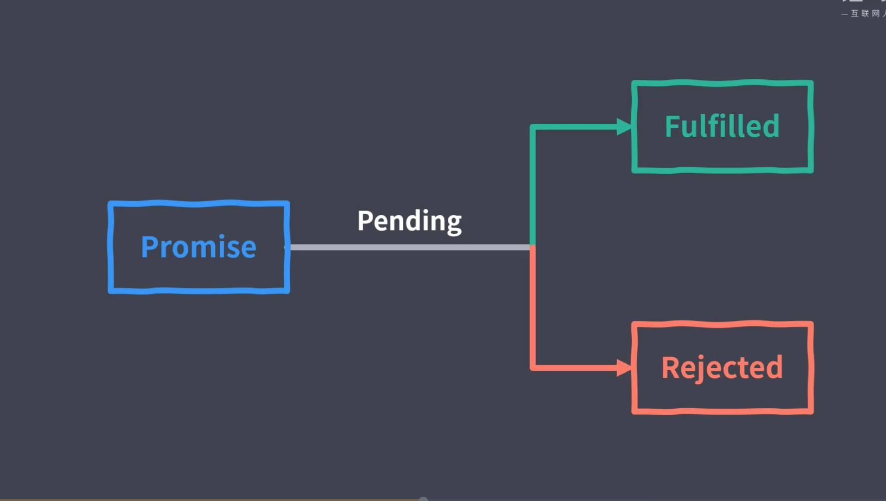

commonjs提出的promise
Es2015 被规定未 异步标准

用promise.race实现ajax请求超时
在一个promis对象中设置一个延迟计时器 ，假定延迟5s。
promise.race的参数就是 发起请求的promis对象 和 设置的延迟计时器对象
根据race的原理（以第一个结束的promise进程结束（无论失败还是成功）而结束）
promis执行的时序问题/宏任务
日常的setTimeout是宏任务，promis是微任务，微任务会在本轮回调结束立即执行